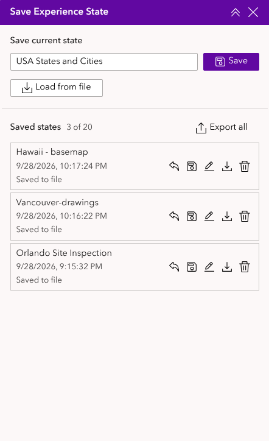
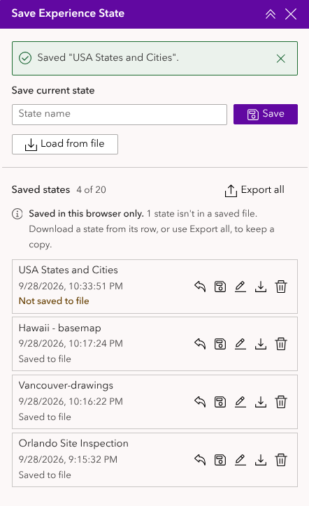
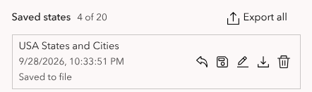
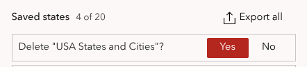
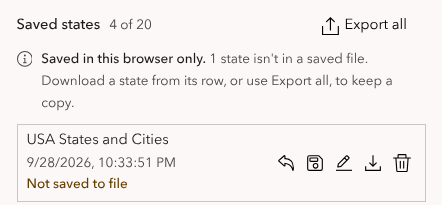
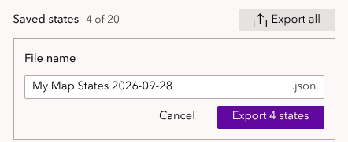
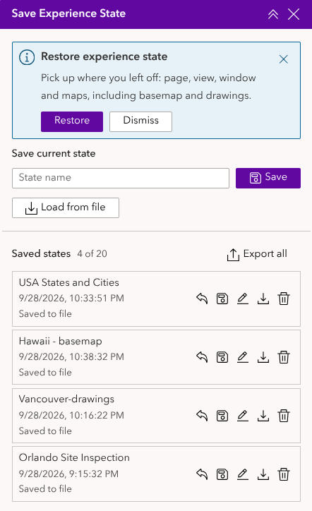
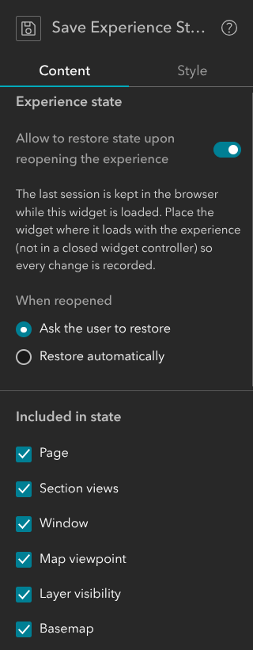
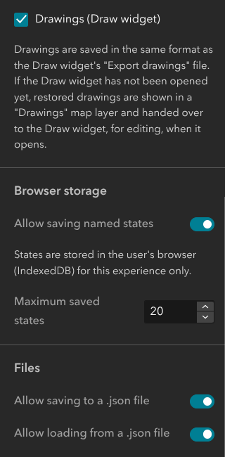

Save Experience State user guide
Save Experience State lets you save where you are in an ArcGIS Experience Builder app and come back to it later. A saved state remembers the page you're on, the views and window that are open, and for each map: where it's zoomed to, which layers are switched on, the basemap, and any drawings you've made with the Draw widget.
This guide has two parts:
- Using Save Experience State is for anyone using an app that includes the widget.
- For app authors is for the person who builds the app.
Quick start
- Set the app up the way you want it: go to the page, zoom the map, turn layers on or off, draw.
- Open Save Experience State, type a name such as Site visit, north block, and click Save (or press Enter).
- Carry on working. Whenever you want to go back, click Restore (the curved arrow) next to the name.

Using Save Experience State
What a state includes
Depending on how the app is set up, a saved state can include:
| Item | What is saved |
|---|---|
| Page | The page you're on. |
| Section views | The view showing in each section, for example the second slide of a slideshow. |
| Window | The window (pop-up panel) that's open, or that none is open. |
| Map viewpoint | Where each map is centred, its zoom or scale, and its rotation. If a map widget can switch between two maps, which one is showing. |
| Layer visibility | Which layers of the web map or web scene are switched on. |
| Basemap | The basemap of each map. |
| Drawings | Everything drawn with the Draw widget, including measurement labels. |
The app's author may have switched some of these off. Anything not included is left as it is when you restore.
Saving a state
Type a name in the State name box and click Save, or press Enter. If you leave the name empty, the state is named after the current date and time.
A message confirms it, and the new state appears at the top of Saved states, with the date and time it was saved. The count beside the heading (for example 3 of 20) shows how many states you have and how many you can keep.

Restoring a state
Click Restore (the curved arrow) on the state's row. The app goes to the saved page, views and window, then updates each map: its basemap, drawings, layers and finally its viewpoint. A message confirms it, for example Restored "Site visit, north block".
Restoring replaces your current drawings with the ones in the state. A state saved with no drawings clears the map of drawings. If you want to keep what you've drawn, save it as a state first.
If the Draw widget hasn't been opened yet, the restored drawings appear in a map layer called Drawings. As soon as you open the Draw widget, they move into it and you can edit them as normal.
Managing saved states
Each row in Saved states has these buttons:
| Button | What it does |
|---|---|
| Restore (curved arrow) | Goes back to this state. |
| Replace (disk) | Overwrites this state with how the app is now. Asks Replace "…" with the current state? first. |
| Rename (pencil) | Lets you type a new name. Press Enter to keep it, or Esc to cancel. |
| Save to file (down arrow) | Downloads this one state as a .json file. |
| Delete (bin) | Removes the state. Asks Delete "…"? first. |
To answer a Replace or Delete question, click Yes or No. Esc also means No.


Where your states are kept
Saved states are kept in this browser only. They aren't saved to the app, so:
- you won't see them on another computer, or in another browser on the same computer;
- they're lost if you clear your browser's data (cookies and site data);
- other people using the app can't see them.
To keep a copy, move states to another computer or share them with someone, save them to a file (see the next section).
Under each state's date, a tag reminds you which states need saving to a file:
| Tag | Meaning |
|---|---|
| Not saved to file | Saved in this browser and never saved to a file. |
| Unsaved changes | Saved to a file before, but renamed or replaced since. |
| Saved to file | Matches the last file you saved it to, or loaded it from. |
While any state isn't in a saved file, a note under the Saved states heading says how many, for example Saved in this browser only. 2 states aren't in a saved file. Download a state from its row, or use Export all, to keep a copy. Save to file on a row saves one state; Export all saves them all at once.

The tags only appear when the app lets you save to a file. They know that a file was downloaded, not where you kept it, so a state stays Saved to file even if you later delete the file.
Saving states to a file
- One state: click Save to file (the down arrow) on its row.
- All states: click Export all beside the Saved states heading. A File name box appears, filled in with the app's title and today's date, for example Harbour plan states 2026-09-28. Change it if you like, then click Export 3 states (or press Enter). Cancel or Esc closes the box without saving.
The file downloads to your computer. It's a small .json file you can keep, email or put on a shared drive.

Loading states from a file
Click Load from file and choose a .json file saved by this widget.
- A file with one state is restored straight away, and also added to your saved states.
- A file with several states (from Export all) adds them all to your saved states, without restoring any. Click Restore on the one you want. If the app doesn't keep a list of saved states, it can only load a file with one state.
States loaded from a file are tagged Saved to file.
If the file was saved from a different app, you'll see This file was saved from a different experience. Anything that exists in both apps, such as a map with the same layers, is still restored; the rest is skipped.
Picking up where you left off
If the app is set up to remember your last session, the widget records how the app is about a second after each change. The next time you open the app in this browser, one of two things happens:
- You're asked. A Restore experience state message appears in the widget. Click Restore to go back to where you were, or Dismiss to start fresh.
- It's automatic. The app goes straight back to where you were, and the widget shows Restored your last session.
If the app opens with a splash window, it's closed when your session is restored.

The last session is separate from your saved states. It's replaced every time you use the app, so to keep a particular setup, save it as a named state.
For app authors
This part explains how to add Save Experience State to an app in Experience Builder (Developer Edition).
Adding the widget to an app
- In the builder, drag Save Experience State from the widget panel into your app.
- There's nothing to connect: it works with every Map widget in the app automatically.
- Choose its settings (below), then save and publish the app.
Where to put it: the last session is only recorded while the widget is loaded. If you use Allow to restore state upon reopening the experience, put the widget somewhere that loads with the app, such as on the page or in a sidebar panel that starts open, and not in a widget controller that starts closed.
While you're designing the app, the widget's buttons are disabled and it shows Saving and restoring states is available in live view and in the published experience. Switch to Live view, or open the published app, to try it.
Settings


Experience state
- Allow to restore state upon reopening the experience (on by default): records the viewer's last session and offers it back next time (see Picking up where you left off).
- When reopened: Ask the user to restore (default) shows a message with Restore and Dismiss; Restore automatically restores without asking.
This does the same job as Experience Builder's built-in option under Settings → State & URL parameters → Allow to restore state upon reopening the experience, but also restores basemaps and drawings. If you use this one, turn the built-in one off, or viewers will be asked twice.
Included in state
Tick the items saved in each state: Page, Section views, Window, Map viewpoint, Layer visibility, Basemap and Drawings (Draw widget). All are ticked by default. These apply to named states, files and the last session alike.
Untick an item to leave it alone when states are restored. For example, untick Map viewpoint so that viewers can save which layers are on without the map jumping to another place.
Browser storage
- Allow saving named states (on by default): shows the name box, Save and the Saved states list.
- Maximum saved states (default 20, up to 200): how many states each viewer can keep. When the list is full, the viewer must delete one before saving another, or before loading a file.
Files
- Allow saving to a .json file (on by default): shows Export all, the per-row Save to file button, and the tags that show which states are in a saved file. If named states are off, a Save to file button appears next to the name box instead, so viewers can still keep a state.
- Allow loading from a .json file (on by default): shows Load from file.
What isn't saved
- Layers added with the Add Data widget. Add Data restores its own layers when the app is reopened. Only the layers in the web map or web scene have their visibility saved.
- Selections, filters, pop-ups and widget settings, such as the features selected in a table or the options chosen in a query.
- Anything in the last second before the tab is closed. Browsers don't guarantee storage writes that start while a page is closing.
Messages and troubleshooting
| You see | What it means / what to do |
|---|---|
| The buttons are greyed out, with Saving and restoring states is available in live view… | You're in the builder. Switch to Live view or open the published app. |
| No features are enabled. Configure this widget in the builder. | The author has switched off all of the widget's options. |
| State restored. 2 item(s) no longer exist in this experience and were skipped. | The app has changed since the state was saved: a page, view, window or map in the state has been removed. Everything else was restored. |
| You can save up to 20 states. Delete a state before saving a new one. | The list is full. Delete a state (save it to a file first if you want to keep it). A file with more states than there's room for isn't loaded at all. |
| Could not save to browser storage. It may be full or disabled. | The browser won't store data for this site, for example in some private windows or when site data is blocked. Save to a file instead. |
| The file is not valid JSON. / The file is not an experience state file. | The file wasn't made by this widget, or has been edited. Choose another file. |
| The file was created by a newer version of this widget. | Ask the app's author to update the widget. |
| The file does not contain any states. | The file was exported from an empty list. |
| This file contains 3 states. This app can only load a file with one state. | The file came from Export all, but this app doesn't keep a list of saved states. Ask for a file of just the state you need (saved with Save to file). |
| This file was saved from a different experience… | The states were loaded, but anything that doesn't exist in this app was skipped. |
| A state shows Not saved to file although I exported it earlier | States saved before the tags were added to the widget have no record of their file. Save them to a file once more. |
| My saved states have gone | They're kept in the browser, and the browser data was cleared, or you're on another browser or computer. Load them from a saved file. |
| My drawings disappeared after restoring | Restoring replaces the current drawings with the state's. To avoid it, save a state before restoring another; you can then restore it to get your drawings back. |
| Drawings appear in a Drawings layer, not in the Draw widget | The Draw widget hasn't been opened yet. Open it and the drawings move into it. |
| The app didn't go back to my last session | The widget wasn't loaded during your last visit (for example it's in a closed widget controller), or the change was made just before closing the tab. |